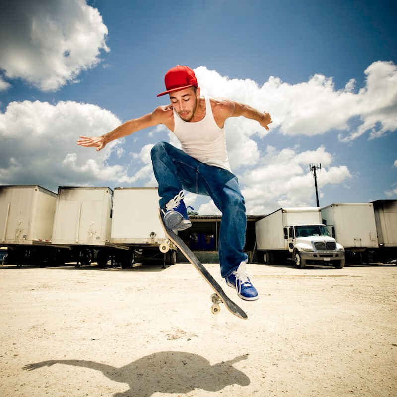
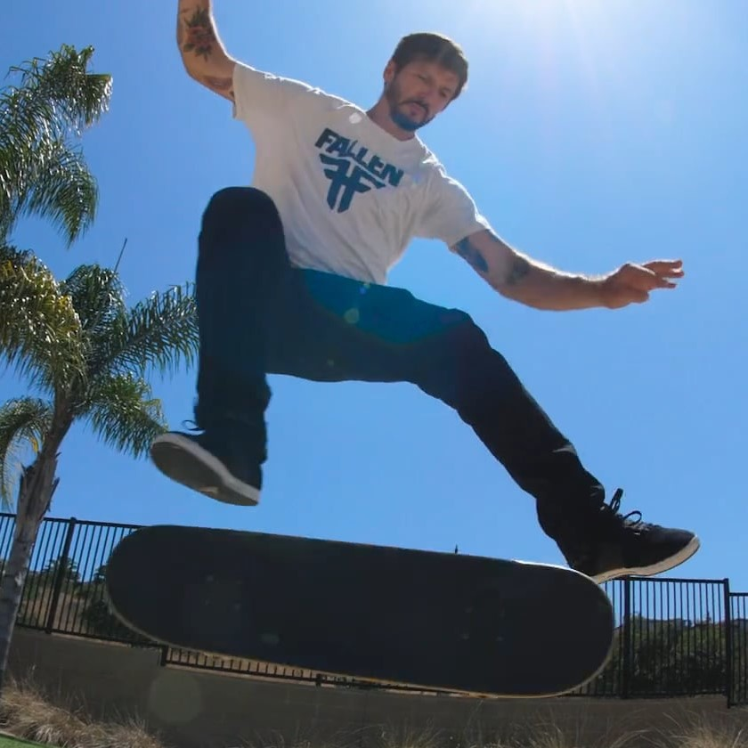
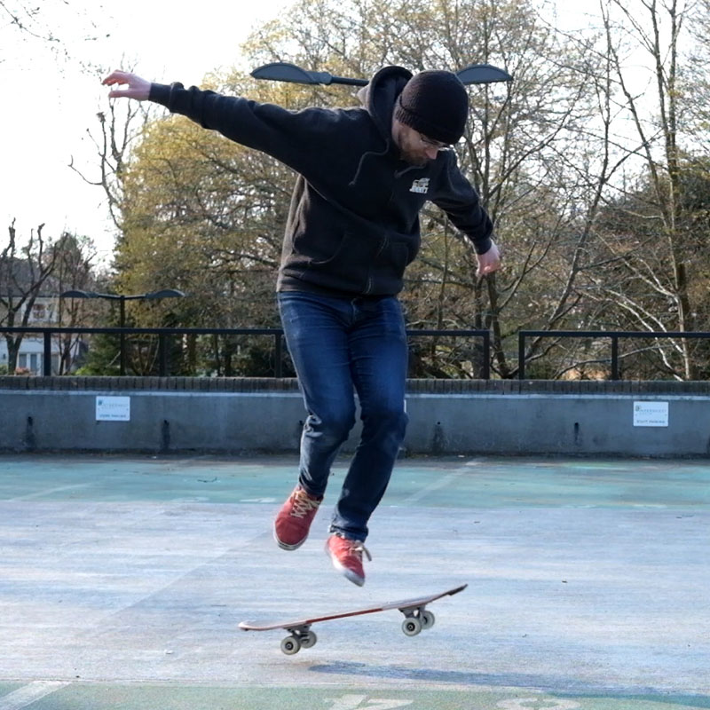
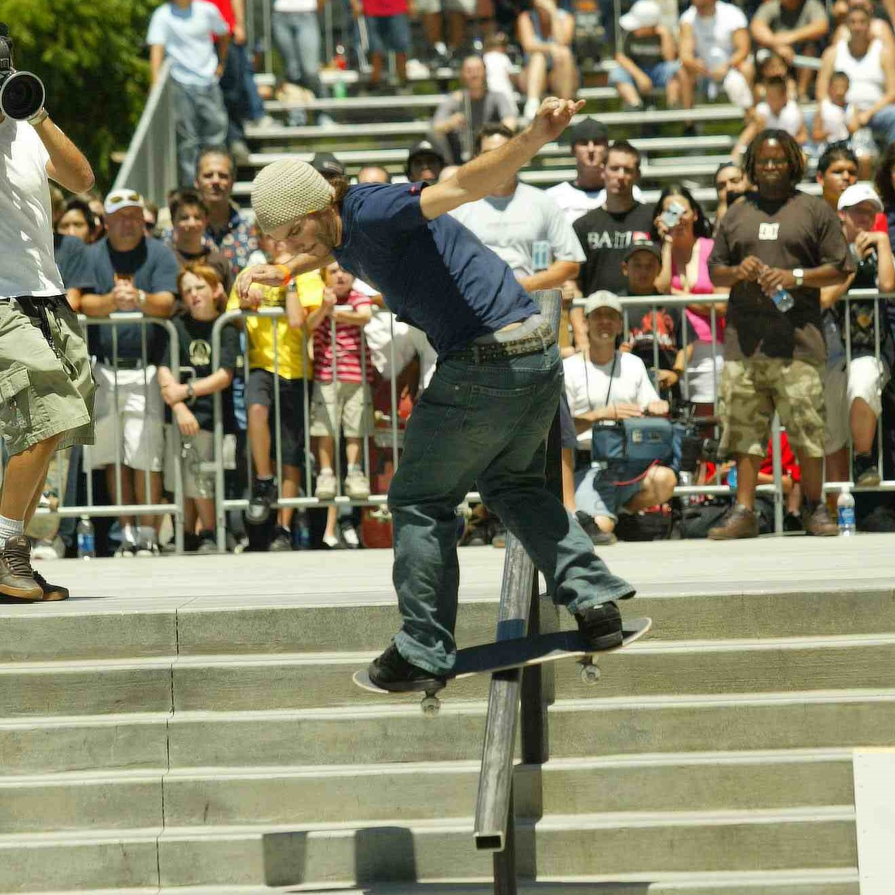
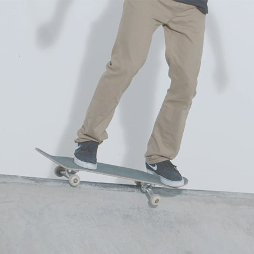
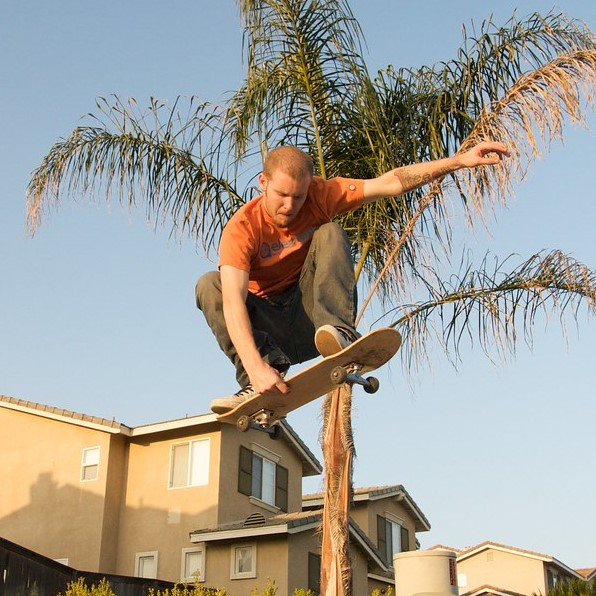

Dus jij bent een skateboarder? Tof! Hier beneden is een lijst met tricks die vet zijn om te oefenen. Op basis van je skill level kun je kijken welke tricks bij jou passen! Hoe verder je naar beneden scrolt, hoe moeilijker de trucjes worden.

Ollie, een ollie is simpelweg een sprong met je skateboard. Dit doe je door het skateboard te kantelen en met je voet omhoog te vegen. Op deze manier zal het skateboard omhoog komen en maak je dus een sprong!

Kickflip, de kickflip is een sprong waarbij je skateboard een barrel roll maakt. Dit doe je door een ollie te doen en vervolgens met je voet schuin over het board te vegen. Zo duw je het skateboard in een richting dat hij zal gaan draaien.

Pop Shuvit, de pop-shuvit is de ollie waarbij je skateboard 180 graden draait. Dit doe je door dus een ollie uit te voeren en vervolgens met je achterste voet hem opzij te vegen. Hierdoor veeg je hem de 180 graden in en doe je een pop shuvit.

Boardslide, de boardslide is een trick waarbij je met je skateboard op een rail springt, en over de rail begint te glijden door goed je balans en snelheid te behouden.

Axle Stall, dit is een manier waarop je balanceert op de rand van de ramp. Dit doe je door aan te komen rijden en proberen je skateboard recht boven de rand te brengen als op de afbeelding.

Indy Grab, deze grab, ook wel greep, doe je door veel airtime te maken. Airtime krijg je door hoog te springen. Als je eenmaal in de lucht bent, grijp je snel naar je board tussen je benen. En op die manier doe je dan een Indy Grab.